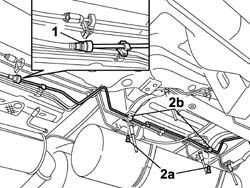
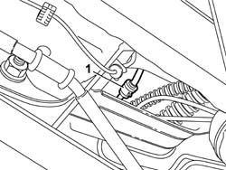

1080E58 INTERMEDIATE fuel vapour PIPE between fuel vapour SEPARATOR and ACTIVE CHARCOAL FILTER - R.R.
- Path
- Procedures > 10 ENGINE > 1080 EMISSION CONTROL SYSTEM > 1080E EVAPORATION CONTROL SYSTEM > 1080E58 INTERMEDIATE fuel vapour PIPE between fuel vapour SEPARATOR and ACTIVE CHARCOAL FILTER - R.R.
- Kind
- repair procedure (removal / refitting; the operation number is the code)
- Applies to
- all engines; all production periods; only with equipment: BIPOWER
- Interactive page
- https://sloeber94.github.io/elrnDB-fDbl/en/#/2584555
Applies to: all engines; all production periods; only with equipment: Cargo trim level and BIPOWER
 Removing
Removing
 Refitting
RefittingDisconnect the battery negative terminal.
Place the car on a ramp.
1042E60 CNG CANISTER ASSEMBLY SHIELD/PROTECTION / - R.R. .
1042A70 Left CANISTER for CNG CANISTER ASSEMBLY - R.R. .
1. Disconnect the intermediate fuel vapour pipe front quick connector.
2. Undo the bolts (2a) and remove the brackets securing the pipes (2b) to the bodyshell.

Applies to: all engines; all production periods; only with equipment: Cargo trim level and BIPOWER
1. Disconnect the quick connector located near the leaf spring front mounting and remove the intermediate fuel vapour pipe after releasing it from the retaining clips.

Applies to: all engines; all production periods; only with equipment: Cargo trim level and BIPOWER
Refitting
RemovingPosition the intermediate fuel vapour pipe and secure it to the retaining clips.
Connect the pipe quick connector, near the leaf spring front mounting.
Position the pipe retaining brackets and secure them to the bodyshell by means of the relevant bolts.
Connect the intermediate fuel vapour pipe front quick connector.
1042A70 Left CANISTER for CNG CANISTER ASSEMBLY - R.R. .
1042E60 CNG CANISTER ASSEMBLY SHIELD/PROTECTION / - R.R. .
Remove the vehicle from the lift.
Connect the battery negative terminal.